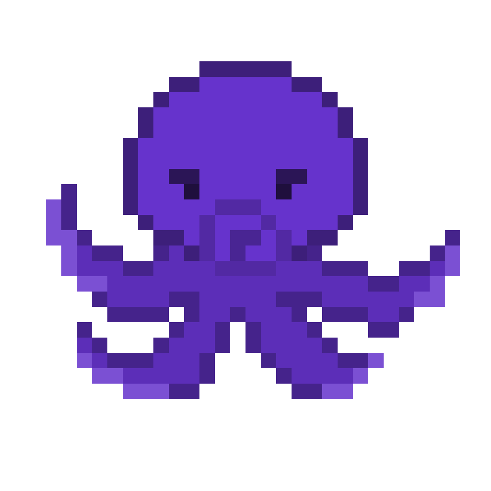
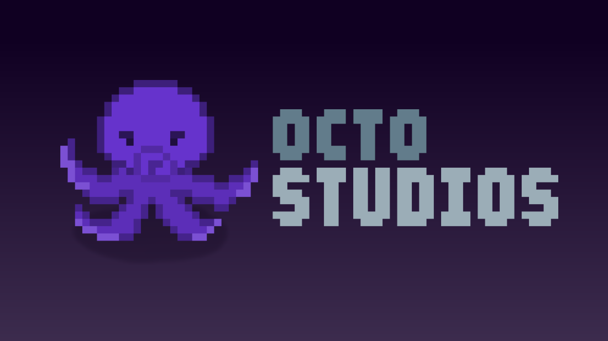
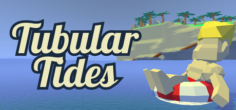

Octo Studios is a small independent game development team dedicated to creating memorable exploration-focused adventures. We believe in crafting games with charming worlds, rewarding discovery, and polished gameplay that encourages players to slow down and enjoy the journey.

Explore mysterious islands, discover hidden treasure, collect powerful relics, and unlock new abilities while uncovering the secrets hidden beneath the waves.
View on Steam →